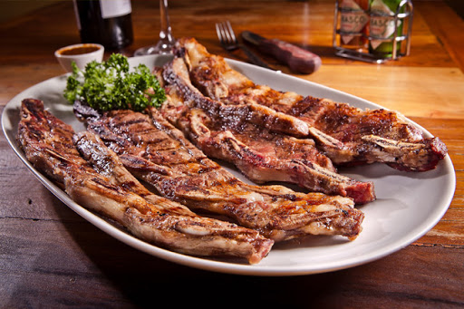
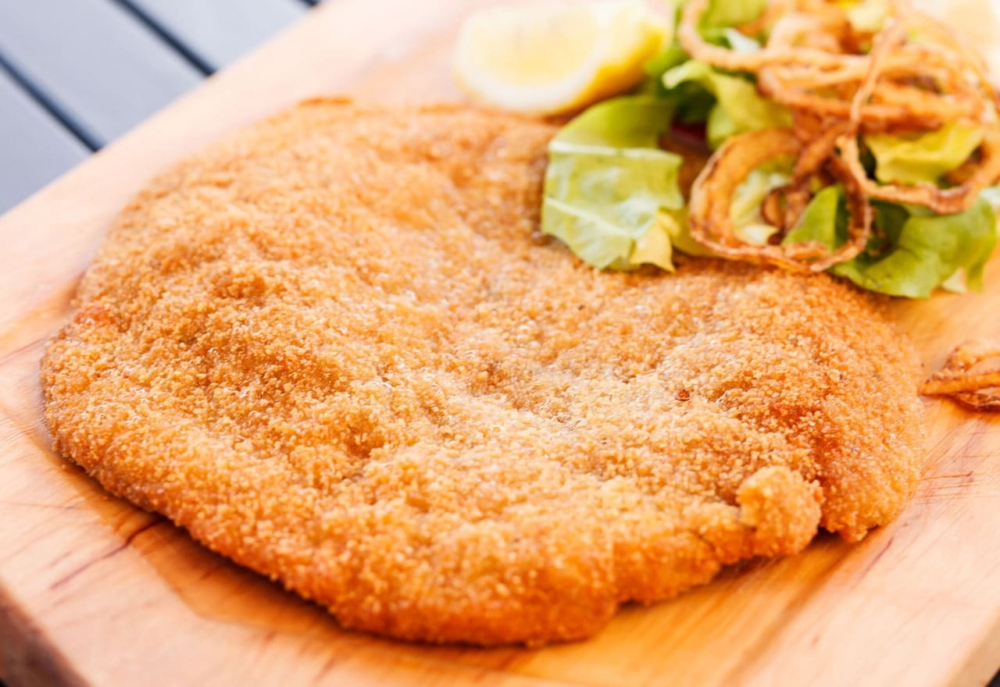
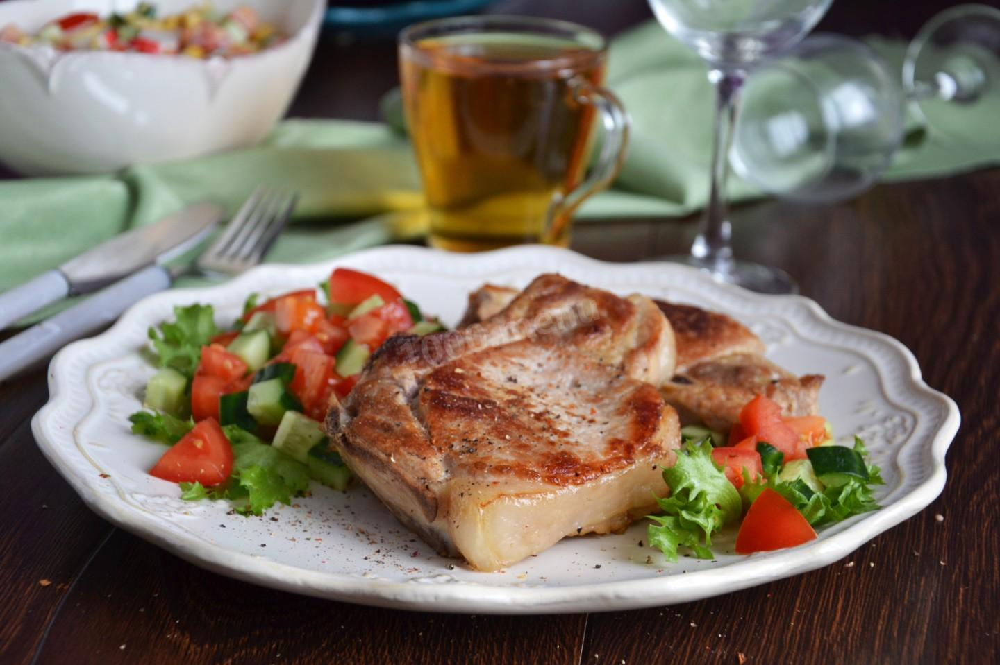
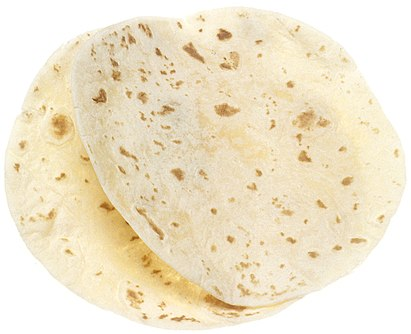
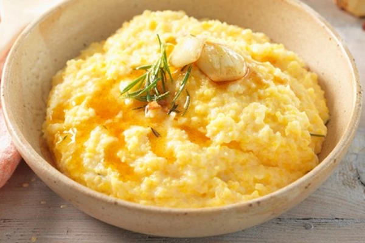
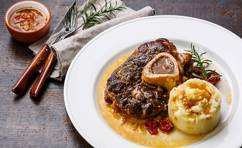
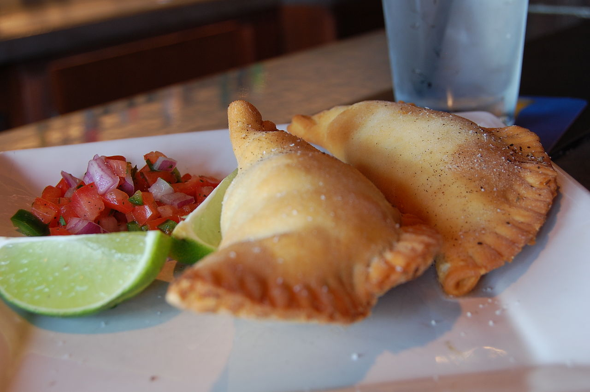
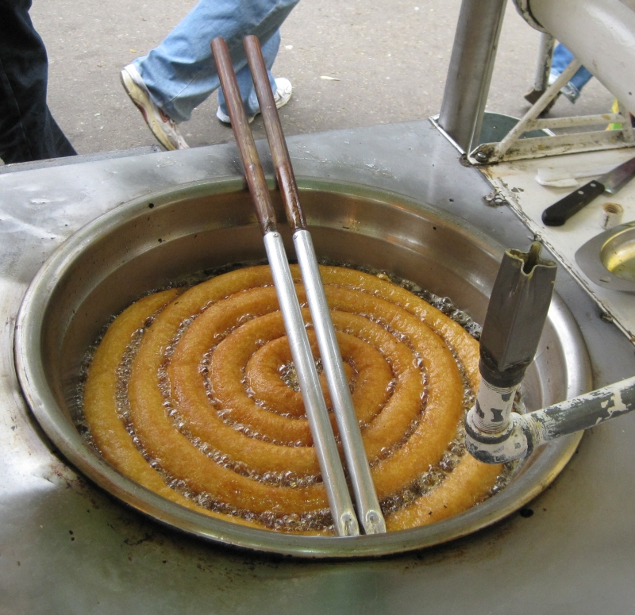

____
Традиционная еда
Асадо — популярное блюдо из жареного мяса, распространённое в Аргентине, Боливии, Чили, Колумбии, Эквадоре, Парагвае, Перу, Уругвае и Венесуэле; техника приготовления кусков мяса, как правило говядины, которые жарятся на гриле (паррилье) или открытом огне.

Отбивная по-милански — мясное блюдо миланской кухни, получившее широкое распространение в таких странах Латинской Америки, как Аргентина, Боливия, Бразилия, Чили, Парагвай, Перу и Уругвай (менее популярно в Мексике, где обжаренное в панировке из сухарей мясное филе известно под названием milanesa). В Португалии говяжья отбивная называется порт. bife à milanesa, а отбивная из куриного мяса называется порт. frango à milanesa. По одной из версий, от отбивной по-милански произошёл венский шницель.

Эскалоп — в различных кухнях так называют обычно ровные, круглые пласты мяса, нарезанные из вырезки (телячьей, свиной) или из других частей мякоти (также ровными кружками, поперёк волокон).

Тортилья - тонкая лепёшк из кукурузной или пшеничной муки, употребляемая в пищу главным образом в Мексике, странах Центральной Америки и США. В Мексике тортильяс являются одним из национальных блюд, базовое блюдо для бедняков.

Полента — итальянское блюдо (каша) из кукурузной муки, аналог мамалыги. Широко распространено в Северной Италии, в Пьемонте.

Оссобуко — традиционное блюдо кухни Ломбардии, представляющее собой тушёную телячью голяшку, а также название используемого для этого блюда мясного полуфабриката.

Фарината — тонкий, пресный блин или лепёшка из нутовой муки, характерное генуэзское блюдо, ставшее традиционным также в других регионах на побережье Лигурийского моря от Ниццы до острова Эльба. Выходцы из Лигурии сделали это блюдо популярным также в Аргентине и Уругвае.

Эмпанада — блюдо, популярное на Пиренейском полуострове и в Латинской Америке. В сущности, любые жареные пирожки в испаноязычных странах. Обычно готовятся из пшеничной муки (хотя, например, в Венесуэле — из кукурузной) и обжариваются в масле или жире. В силу влияния испанцев, распространены также на Филиппинах, в последние сто лет вместе с выходцами из Латинской Америки широко представлены и в США. Для португальской и бразильской кухни изначально не были характерны, и считаются блюдом, заимствованным из испаноязычных стран.

Чуррос — сладкая обжаренная выпечка из заварного теста, имеющая в сечении вид многоконечной звезды или просто круглая в сечении. Родиной чуррос считается Испания, где чуррос традиционно подают на завтрак.

____